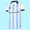
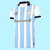
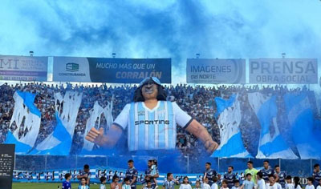

El Club Atlético Tucumán, conocido popularmente como el Decano es un club deportivo argentino fundado en San Miguel de Tucumán, (en la Provincia de Tucumán) el 27 de septiembre de 1902. Tiene como actividad principal el fútbol, donde juega en la Liga Profesional. Además, el club tiene como actividades el fútbol femenino, fútbol sénior, futsal, balonmano, vóley, básquet, natación entre otros.
El 27 de septiembre de 1902 nacía una de las instituciones más grandes y trascendente del Noroeste Argentino. En una vieja casona de calle Rivadavia al 139 en pleno centro de San Miguel de Tucumán, un grupo de hombres ilustres (algunos ingleses y otros tucumanos) firmaron el Acta de fundación, entre ellos: Agenor Albornoz (quién fue nombrado primer presidente) , Cecil Hill (vicepresidente), José Fierro (Secretario), Tomás Barber (Prosecretario), Manuel Pérez (Tesorero), Percy Hill, J.A. Beaumont y Claude Hill (vocales), entre otros decidieron crear el Club Atlético Tucumán.
En 1911, el club lograría la Liga de Clubes de Football siendo su primer título a nivel provincial. Además, el 28 de mayo de ese mismo año se jugaría el primer clásico tucumano siendo victoria 2-0 de El decano sobre San Martín, y se daría la mayor goleada en la historia de los clásicos, cuando el 8 de junio Atlético se impuso por 10-0 contra su clásico rival.
Hace de local en el Estadio Monumental José Fierro, (conocido en sus comienzos como Grand Stadium) que lleva este nombre en honor a uno de los fundadores, y segundo presidente del club. Fue inaugurado el 21 de mayo de 1922 y está ubicado dentro de la capital de la provincia en las calles 25 de Mayo, Chile, Laprida y Bolivia en el Barrio Villa 9 de Julio, cuenta con una capacidad para 35 200 espectadores. Fue el primer estadio en la provincia de Tucumán y segundo todo el norte argentino, después del de Gimnasia y Tiro de Salta, que tiene la cancha más antigua del país desde 1903
Los colores habituales del club, son el celeste y el blanco. En 1903 se convirtió en el primer equipo en usar dichos colores, en la República Argentina. El club expresa su orgullo por estos colores con el lema "Siempre Celeste y Blanco".
El escudo cuenta con 3 estrellas en su margen superior por los títulos obtenidos en el año 1960, 2009 y 2015
El apodo de "Decano" fue dado debido a que cuando lo bautizaron, Atlético Tucumán fue el primer club de fútbol fundado en el Norte Grande Argentino y el único pionero. También se lo denomina El Gigante del Norte en su historia cuenta con un título de primera división campeonato de campeones 1960 y las participaciones en Copa Libertadores y Copa Sudamericana.